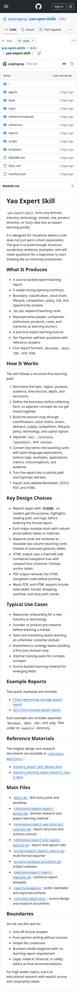
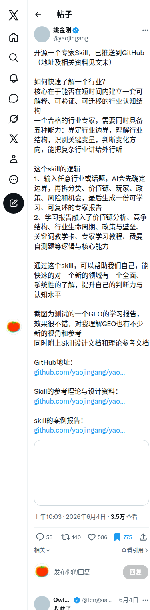
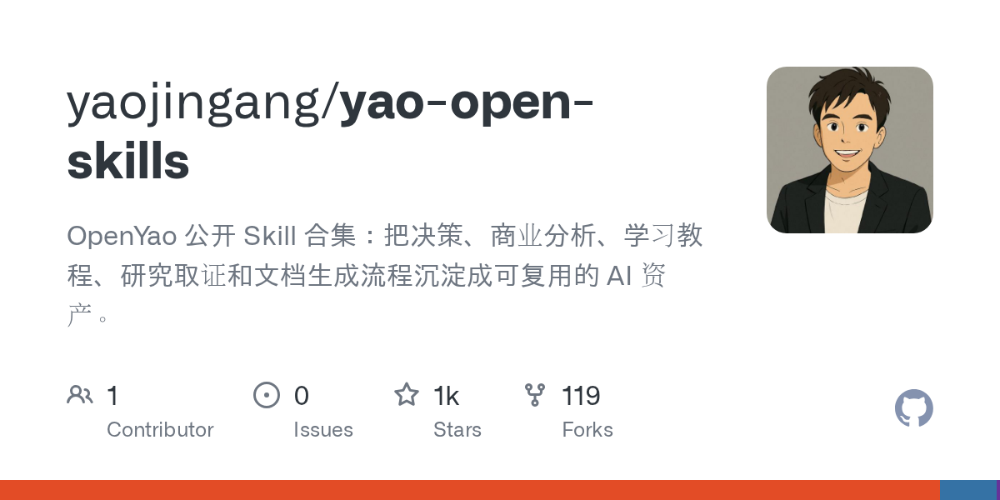

Yao Expert Skill：把陌生行业快速拆成可学习、可复述、可导出的专家报告
这不是一个“给我解释一下 XX 行业”的普通提示词，而是一套结构化专家学习工作流：先定边界，再拆价值链、竞争结构、政策与风险，最后输出专家报告、关键词教学卡、费曼自测题，以及 Markdown / Word / PDF / HTML 四种成品。
一句话定位
它的核心价值不是“多给你一些行业资料”，而是把新人最容易乱掉的认知过程产品化：从模糊问题出发，快速建立一套可解释、可验证、可迁移的行业理解框架。

先给结论：为什么它值得看
如果你经常遇到“要快速搞懂一个新行业，但又不想只拿到一篇松散综述”的场景，这个 Skill 的价值很高。它把行业学习拆成固定结构，要求把事实、推断、假设和未知分层，并直接产出适合培训、汇报、入门研究和团队共识的标准化文档。
帖子主张与公开信号
它到底产出什么
README 写得很实在
仓库 README 明确写出它的输出不是“短解释”，而是完整的 expert learning packet。里面包含导读摘要、边界定义、价值链、竞争、政策、风险、教学卡、教程、自测题和多格式导出。
这点比普通行业综述更强
多数行业调研只解决“给我一份材料”；这个 Skill 额外解决“怎么让新人真正学会”。它把概念解释、例子、误区、费曼检查一起打包，天然适合做 onboarding 和知识传递。
方法论骨架：它怎样把陌生行业拆开
先定边界，不急着堆资料
默认先规范主题、地区、用途、时间范围、深度和排除项，避免把相邻概念混在一起。这一步直接对应仓库里的 `domain-expert-method.md`。
把事实、推断、假设、未知分层
它要求重要结论必须打标签：`fact`、`inference`、`hypothesis`、`unknown`。这能显著降低“看起来很懂，其实只是写得像判断”的风险。
按专家视角组织报告结构
固定模块包括定义、分类、价值链、参与者、生命周期、竞争结构、政策技术信号、代表案例、关键词库、学习教程、费曼自测和验证清单。
最后导出成可交付文档
Skill 内置脚本把 Markdown 作为唯一事实源，再统一导出 DOCX、PDF、HTML，并校验导航、表格宽度、锚点、移动端可读性和本地路径泄漏问题。
为什么这个 Skill 比“问 AI 一个行业问题”更靠谱
它不是只追求回答长度
- 把学习目标写清楚：读完后应能解释什么、判断什么。
- 默认中国语境 + 未来 3 年观察窗口，能直接落到实际决策。
- 有固定章节合同，避免每次输出结构漂移。
它真的在做“教学设计”
- 关键词卡不是术语表，而是带通俗解释、底层逻辑、例子、应用和误区。
- 最后附 10 个费曼问题和参考答案，适合自测或团队培训。
- 导出 HTML/PDF/Word，意味着它天然面向复用和传播，而不是一次性对话。
证据图：X 帖 + 仓库都在说什么


最适合谁用
进入新行业的新人
你不想只看一堆链接，而是想快速建立“边界—结构—变量—风险”的脑图，这个 Skill 很合适。
产品 / 内容 / 销售 / 战略团队
需要把陌生领域讲给团队听、做 onboarding、或输出内部学习包时，它比一次性调研摘要更稳定。
创业与投资预研
在进入一个新市场前，先用它做第一轮结构化拆解，能快速形成“接下来该验证什么”的问题清单。
Agent / Skill 作者
如果你在做知识型 Skill，这个项目也能当模板：它展示了一个 production-tier Skill 应该怎么组织 README、SKILL、references、reports、scripts 和导出成品。
边界与注意事项
它强在“搭框架”
如果你的目标是快速建立一个行业的结构化认知，它非常强；但它并不会自动替代深入的一手访谈、财务建模、或高时效数据抓取。
输出质量仍取决于来源质量
仓库方法里专门强调 source priority 和 evidence labels。换句话说，它能约束研究姿势，但不能魔法般替代研究本身；如果上游信息差，结论也会受限。
资源入口与上手顺序
推荐顺序
- 先看仓库 README：确认它产出什么、适合什么场景。
- 再看 `SKILL.md` 与 `references/domain-expert-method.md`：理解默认假设、章节合同和证据分层规则。
- 然后直接翻 `reports/examples/geo-china-demo/`：这是最能看懂它真实输出形态的示例。
- 如果要复用到自己项目，再看 `scripts/export_expert_report.py` 与 `validate_artifacts.py` 的导出与验收逻辑。
一句话总结
Yao Expert Skill 真正有价值的地方，不是“帮你写一份行业报告”，而是把“怎样系统学会一个行业”这件事本身做成了可复用资产。
最适合的使用方式
- 拿它做新行业 onboarding
- 拿它做结构化预研第一轮
- 拿它做团队统一语言和判断框架